BUSINESS CENTRAL · AL DEVELOPMENT
Converting Business Central Table Data into 14 API-Ready Payload Formats
A SaaS-safe reference: from a single Customer record to JSON, Base64, byte arrays, hashes, signatures, compression, and encryption — with no DotNet.
Almost every Business Central integration eventually has to hand a record to something outside BC — a payment gateway, a document store, a SOAP service, a partner API. The awkward part is rarely the HTTP call. It is deciding what shape the data should take before it leaves.
The common tutorial answer is to loop through a stream and push each byte into a JSON array. It works, but it is one option out of many — and usually the wrong one. This article converts the same Customer record into fourteen different payload formats, shows what each looks like, and explains when to reach for it. Everything here runs on Business Central online: no DotNet variables, only System Application codeunits.
The source object is deliberately trivial so the transformations stay visible:
procedure BuildCustomerJson(CustomerNo: Code[20]) JsonObj: JsonObject
var
Customer: Record Customer;
begin
Customer.SetAutoCalcFields("Balance (LCY)");
if not Customer.Get(CustomerNo) then
Error('Customer %1 not found.', CustomerNo);
JsonObj.Add('no', Customer."No.");
JsonObj.Add('name', Customer.Name);
JsonObj.Add('balance', Customer."Balance (LCY)");
end;Every format below starts from this one JsonObject. The actions were added to a page extension on the Customer List so each conversion is a single click.
1 · Plain JSON Text
The baseline. JsonObj.WriteTo(Text) serializes straight to a string, which is exactly what an application/json endpoint expects in its request body. Nothing clever, and for most REST APIs nothing else is needed.
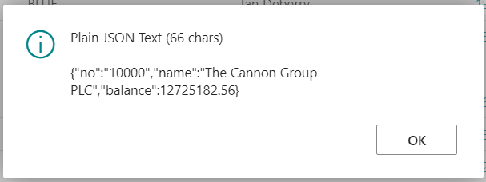
Figure 1 — The Customer record serialized to a compact JSON string.
2 · Stream / Temp Blob
Writing the JSON into a Temp Blob via an OutStream is the carrier that every other binary format is built on. It also sidesteps the in-memory size ceiling of a Text variable, so it is the right starting point whenever the payload might be large.
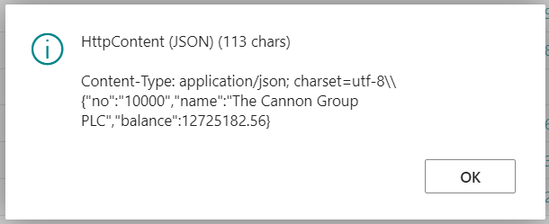
Figure 2 — Confirmation that the blob was populated, with its length in bytes.
3 · Base64 String
Base64 is the industry-standard way to carry binary data inside a JSON string — the familiar "fileContent": "eyJ..." pattern. It adds about 33% in size but does the whole job in a single call through the Base64 Convert codeunit. For the vast majority of "send a file as part of a JSON body" requirements, this is the correct choice.
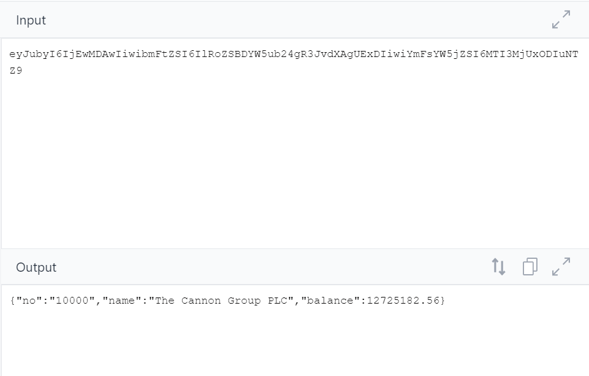
Figure 3 — The payload encoded as a Base64 string.
Because encoding is only useful if it reverses cleanly, the round-trip is worth proving: encode to Base64, decode straight back to a JsonObject, and confirm the result matches the original.
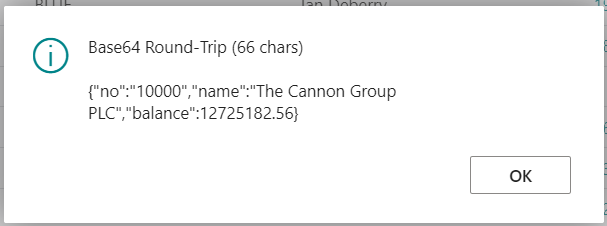
Figure 4 — Base64 decoded back to the original JSON, intact.
4 · Byte Array as JSON Integers
This is the format most tutorials show first: [123, 34, 110, ...], one integer per byte. It is the right shape only when a vendor DTO exposes a byte[] that their serializer emits as a numeric array. Note the cost — it is a per-byte loop, so every byte is a separate interpreter round-trip. Above roughly 100 KB it will visibly stall the client. Prefer Base64 unless the schema truly demands integers.
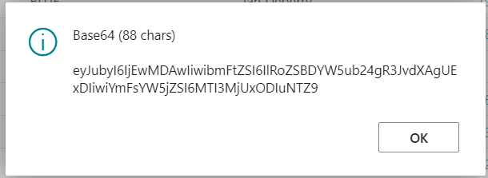
Figure 5 — The same payload as an array of byte values.
5 · List of [Byte]
An AL-native List of [Byte] is not a JSON structure at all — it is the right intermediate when you need to hand bytes to another AL procedure, chunk them, or compute a checksum without materializing any JSON.
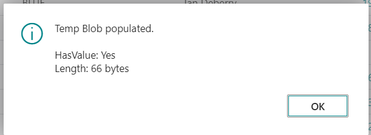
Figure 6 — The payload as a native AL byte collection (66 entries).
6 · Hex String
Two characters per byte, uppercase. Rarely needed for modern REST, but several legacy banking and EDI gateways still expect hex. The trade-off is a 2× size overhead versus the raw bytes.
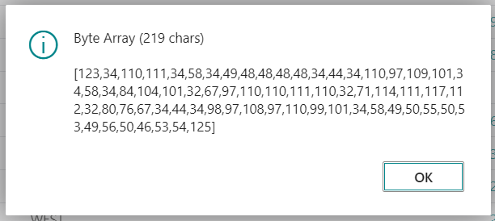
Figure 7 — The payload rendered as a hexadecimal string.
7 · HttpContent (application/json)
The first true transport wrapper. This builds the HttpContent object you would hand to HttpClient for a standard REST POST or PUT, with the content-type header set correctly. One detail that trips people up: the content-type belongs on the content headers, not the request headers.
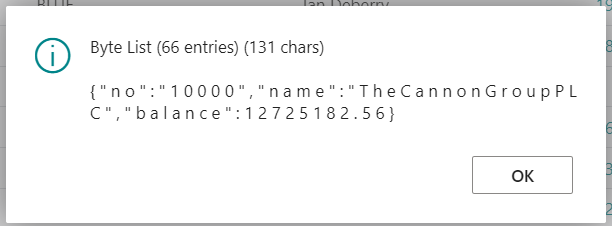
Figure 8 — HttpContent assembled with an application/json content type.
8 · HttpContent (application/octet-stream)
This is where a common misconception surfaces. Switching to application/octet-stream does not transform the bytes — it sends the exact same bytes as the JSON version and only changes the label that tells the receiver how to interpret them. The value of this format is efficiency: the body is streamed with zero encoding overhead, which matters for large uploads to blob stores and document endpoints.
To make that concrete, the payload can be dumped as hex with an ASCII gutter — the same view a network sniffer shows. The right-hand column spells readable JSON precisely because the content is text; the content type never changed it.
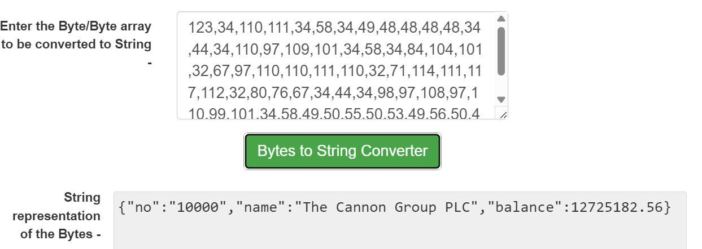
Figure 9 — The octet-stream payload as a hex dump; the ASCII gutter reveals plain JSON.
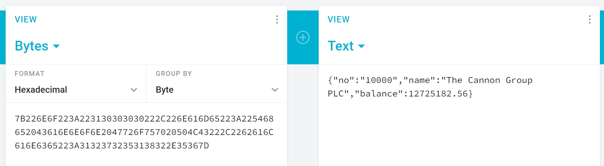
Figure 10 — Content-Length and offsets confirm the bytes are identical to the JSON form.
9 · Multipart / Form-Data
The shape most file-upload endpoints expect: a form field plus a file part, separated by a boundary. The one rule that cannot be broken is that parts are separated by CRLF — building the body with AppendLine() produces the wrong line ending and silently breaks parsing on the far side.
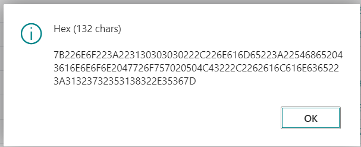
Figure 11 — The payload wrapped as a multipart/form-data body with boundary markers.
10 · Zip → Base64 (and a real file download)
For bulk exports, compressing the JSON before encoding cuts payload size dramatically on repetitive data. The same archive can either be Base64-encoded for a request body or streamed to the browser as an actual .zip download.
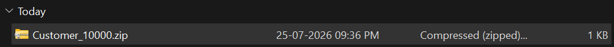
Figure 12 — The zip archive delivered as a downloadable file.
One subtlety worth flagging: a zip archive embeds a creation timestamp, so the same data produces a different byte sequence on every run. That has a direct consequence for signing — never HMAC a zipped payload, because the signature will change each call even when nothing about the data changed. Sign the uncompressed JSON instead.
11 · Comparing the Formats by Size
With every conversion in place, it is useful to see them side by side. A single action runs them all and reports the resulting length, so the choice can be made on evidence rather than habit.
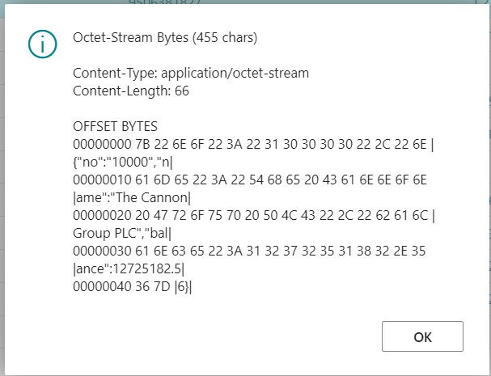
Figure 13 — Payload size by format for one Customer record.
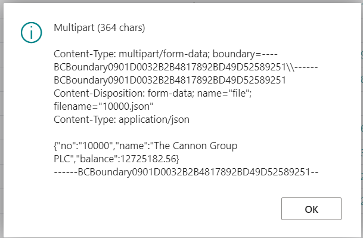
Figure 14 — The full comparison, including hash and signature lengths.
12 · URL-Encoded
Flattening the object into a key=value&key=value string is what older APIs, OAuth token endpoints, and some webhook callbacks still expect as application/x-www-form-urlencoded. The Type Helper codeunit handles the escaping.
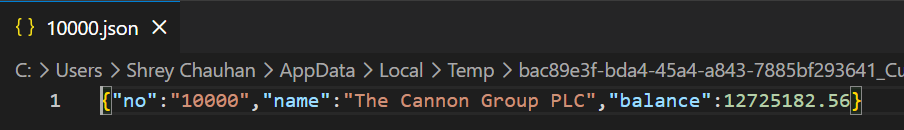
Figure 15 — The payload as a URL-encoded query string.
13 · SHA256 Hash and HMAC-SHA256 Signature
These two are not conversions you can reverse — they are one-way. A SHA256 digest is a fixed 32-byte fingerprint used to prove a payload was not tampered with; there is no "decoder," and any site claiming to decrypt a hash is really just looking up pre-computed common inputs. HMAC-SHA256 adds a shared secret, producing the signature most APIs expect in an X-Signature header.
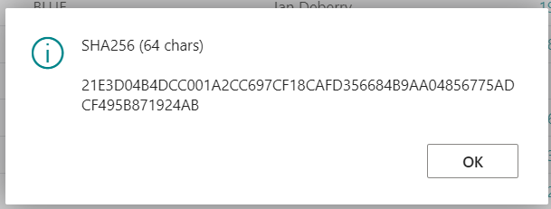
Figure 16 — An unkeyed SHA256 digest of the payload.
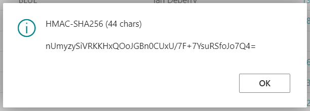
Figure 17 — A keyed HMAC-SHA256 signature over the same payload.
A signing gotcha specific to AL: the keyed variant is an overload of GenerateHashAsBase64String, and the SecretText parameter is what selects it. Pass a plain Text key and the compiler quietly binds to the unkeyed overload, giving you a hash with no key and no error. And a hex-versus-Base64 encoding mismatch — not a wrong key — is the most common reason a signature fails validation against another tool.
14 · XML for SOAP and Legacy Endpoints
AL has no native JSON-to-XML converter, so a flat object is walked into an XmlDocument element by element. This is the format for SOAP services and older systems that predate JSON entirely.
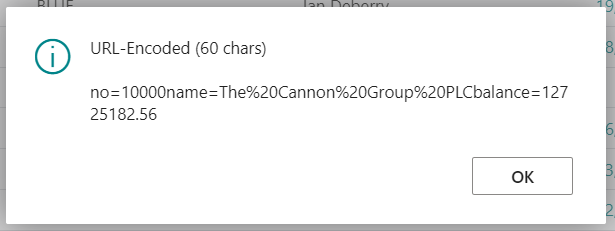
Figure 18 — The payload converted to an XML document.
Bonus · Reversible Encryption (AES / Rijndael)
Hashing is one-way; when a third party actually needs to read the value back, the tool is encryption, not hashing. The Rijndael Cryptography codeunit provides AES encrypt/decrypt entirely within SaaS.
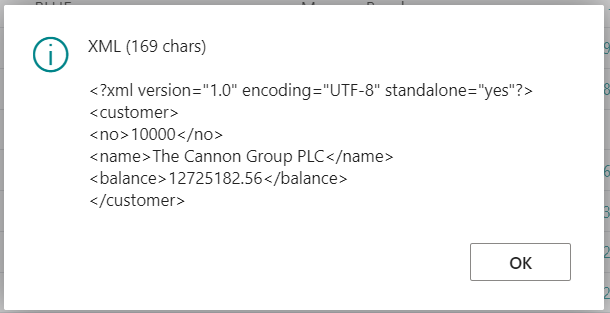
Figure 19 — The payload encrypted with AES.
The critical detail: InitRijndaelProvider() generates a fresh random key on every call. Encrypt in one action and decrypt in another without persisting that key, and decryption fails with what looks like data corruption. Capturing the key and IV — into Isolated Storage — before decrypting is what makes the round-trip reliable.
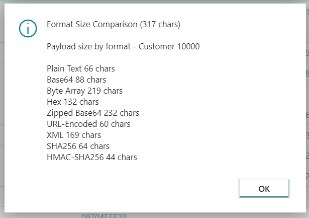
Figure 20 — A full encrypt-then-decrypt round-trip, confirming the original is recovered.
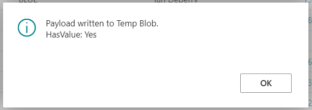
Figure 21 — The decrypted payload matches the source exactly.
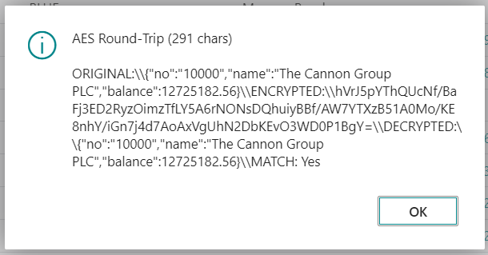
Figure 22 — The stored ciphertext held in isolated storage.
Choosing the Right Format
The decision usually comes down to what the receiving endpoint declares:
- Vendor says string (base64) → Base64 (format 3).
- Vendor says array[integer] → byte JSON array (format 4).
- File-upload endpoint → multipart (9) or octet-stream (8).
- Signature required → HMAC the exact serialized text you send, before any further encoding (13).
- Anything production-facing → persist the payload first, so a failed call is retryable rather than lost.
The broader point is that "convert to bytes" is not a single technique but a family of them, and picking well is mostly about reading the vendor contract carefully and respecting a few AL-specific footguns — content-type is a label not a transform, hashes do not reverse, zip is non-deterministic, and SecretText refuses string literals on purpose. Get those right and the HTTP call itself becomes the easy part.
Built and tested on Microsoft Dynamics 365 Business Central (online). All formats use System Application codeunits only — no DotNet.